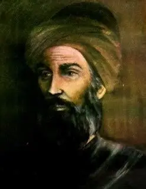

Welcome to the Mathematical World!
Abu al-Qāsim al-Majrīṭī
Andalusian Scholar of Mathematics, Astronomy, Alchemy, and Economics
Abu al-Qāsim Maslama ibn Aḥmad al-Majrīṭī (c. 950–1007 CE), also known in Latin as Methilem, was a prominent Muslim mathematician, astronomer, alchemist, economist, and polymath based in al-Andalus. Born in Madrid and later active in Córdoba, he served during the reign of Al-Hakam II.:contentReference[oaicite:0]{index=0}
Scientific Contributions
- Mathematical Astronomy: He translated and revised Ptolemy’s Planisphaerium and refined Al-Khwarizmi’s astronomical tables, adapting them for the Hijri calendar.:contentReference[oaicite:1]{index=1}
- Observational Astronomy: Conducted original star observations—he measured Regulus’s longitude (135° 40′) and estimated precession at ~13° 10′.:contentReference[oaicite:2]{index=2}
- Surveying & Triangulation: Introduced surveying methods and triangulation techniques—important advances for geographic and astronomical measurements in al-Andalus.:contentReference[oaicite:3]{index=3}
- Teaching & Institutional Role: Founded a school of astronomy and mathematics in Córdoba, mentoring figures like Ibn al-Saffār.:contentReference[oaicite:4]{index=4}
- Alchemy & Chemistry (Pseudo-Majrīṭī Works): Later works like Rutbat al-Ḥakīm ("The Sage’s Rank") and Ghayat al-Ḥakīm ("Picatrix") are likely attributed posthumously and are considered pseudepigraphical. These works include chemical experimentation, such as mercury oxide preparation, and speculative metaphysical content.:contentReference[oaicite:5]{index=5}
- Other Writings: Authored texts on commercial arithmetic, taxation, and the economy of al-Andalus. Edited parts of the Encyclopedia of the Brethren of Purity.:contentReference[oaicite:6]{index=6}
Legacy
- Regarded as the foremost mathematician and astronomer in 10th-century Iberia.:contentReference[oaicite:7]{index=7}
- His revisions paved the way for Andalusian scientific progress, influencing students like Ibn al-Saffār and Abu al-Salt.:contentReference[oaicite:8]{index=8}
- By blending theoretical astronomy and institutional teaching, he laid foundational groundwork for organized scientific inquiry in al-Andalus.:contentReference[oaicite:9]{index=9}